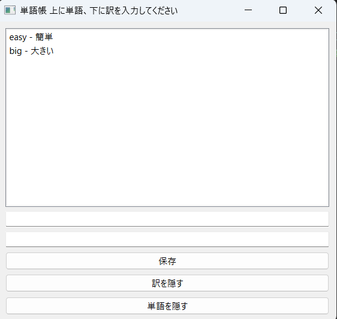
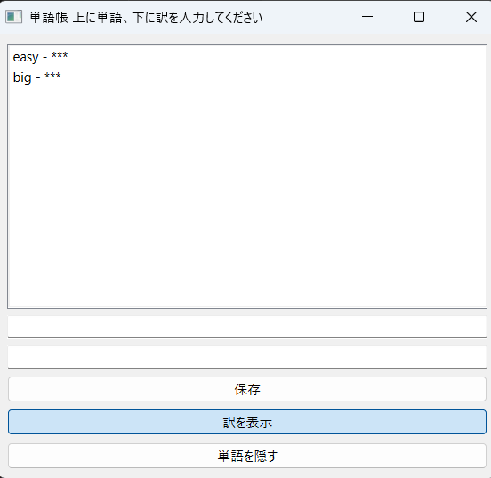
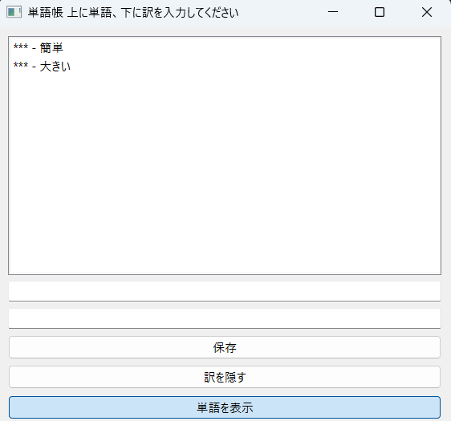

11/14
11歳 ... 千葉火星ローバーコンテスト入賞
16歳 ... 高専入学
17歳 ... 文化祭用ゲーム制作チームリーダー
Python
solidworks
https://unityroom.com/games/sennmetsu_survive
https://github.com/Shou-K/Inoue08.git
今回私が製作したのはミニシューティングゲームです。このシューティングゲームの概要説明の前に当初作る予定だった 回避ゲームについてお話します。12月の終わりまで作っていた回避ゲームは7×7のマスの中をプレイヤーは自由に動き回り、 攻撃をよけながら3分間生き残るというものでした。しかし、どうやっても処理が重くなってしまって断念し、新しくこの シューティングゲームを作りました。このシューティングゲームはキャラを左右に動かしながら落ちてくる敵を倒すというもので 100体倒すとクリアになります。また、10体倒すごとに敵の落下速度が上昇し難易度が上がってい置きます。苦労したのは 敵とたまの当たり判定でした。なかなか思った通りに行かず大変でした。またキャラクターや敵の素材はすべて自前で用意し たものです。ちょうど良い素材を趣味で作っていたので素材を探す手間が省けて楽でした。


私は今回の課題でpythonのpysideを用い英単語帳を作ることに挑戦しました。これを作ろうと思い立ったのは最近英単語 の勉強を少しおろそかにしてしまっていると思ったからです。この英単語帳は上の空欄に単語、下に訳を入れ保存することで リストにメモすることができます。また訳、単語を隠すボタンを押すことでそれぞれの項目を隠すことができ、暗記練習に使 用することができます。政策面ではリストを作ることに苦労しました。SQliteデータベースに接続するところのプログラムに 時間がかかりました。
  デザインなど試行錯誤中なのでぐちゃぐちゃになっていることがあります。すみません。